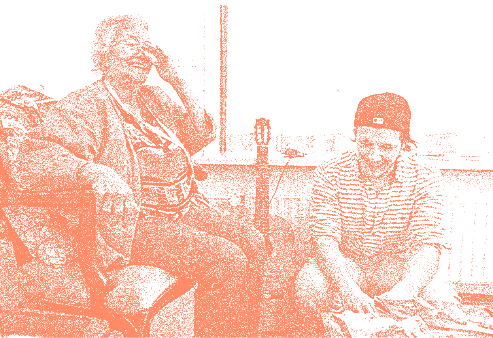

Em julho de 1995, mais de 700 habitantes da cidade de Chicago, Estados Unidos, morreram em uma onda de calor que durou aproximadamente uma semana. Entre as populações mais atingidas estavam os idosos e classes mais baixas. Mas além dessas semelhanças, estava o fato de que a maioria das vítimas vivia em situação de isolamento.
O sociologista Eric Klinenberg em seu livro "Heat Wave: A Social Autopsy of Disaster in Chicago" investigou dois bairros do subúrbio de Chicago: North Lawndale e South Lawndale, ambos com situações econômicas parecidas e posições geográficas semelhantes. Na verdade os bairros eram divididos apenas por uma rua, porém segundo o autor, parecia que eram divididos por um continente.
"Loneliness can be a result of our built environment"
Grace Kim, Arquiteta e moradora e co-criadora do Capital Hill Urban Cohousing.
O bairro de North Lawndale, era um espaço que havia sofrido com uma crise nos anos anteriores à onda de calor. Houve uma evasão do comércio local, instituições públicas e das pessoas. O resultado desse processo de esvaziamento do bairro, foi que os moradores que ali permaneceram não possuíam mais presente um sentido de comunidade. Muitos morreram durante essa mudança climática, porque não tinham confiança para deixarem suas casas e não possuíam pessoas ao redor com quem contar. O resultado é que os prédios se tornaram "fornos de tijolos" e eles não puderam sobreviver ao calor.
Já o bairro vizinho South Lawndale, tinha uma comunidade viva e ativa. O bairro era repleto de comércio, restaurantes, organizações comunitárias e igrejas, que levavam as pessoas a manterem um contato com os vizinhos e com o exterior. Isso trouxe uma das menores taxas de mortalidade durante este período, menor que em muitos bairros de pessoas brancas de classe média-alta.
"Chicago residents who lacked social ties and did not leave their homes regularly died disproportionately during the catastrophe.
Klinenberg nomeou o fator que dividiu essas duas comunidades de"Infraestrutura Social". Espaços que permitem o convívio público e onde os habitantes possuem uma dinâmica social de engajamento com a comunidade e cuidado com os espaços compartilhados permitem a proteção contra o fenômeno do isolamento social, que tragicamente pode ser letal.
"What if cities embraced a culture of sharing. I see a future of shared cities that bring us community and connection instead of separation and isolation."
Conceitos de compartilhamento de espaços se tornaram mecanismos de remediação de um mal da contemporaneidade: o isolamento.
”Today homes are designed around the idea of privacy and separation. What if homes were designed to be shared from the ground up? What would that look like?”
Joe Gebbia , Ted Talk "How AirBnb designs for trust"
Segundo a arquiteta Grace Kim, arquiteta defensora do modelo de casas compartilhadas como solução de moradia contemporânea, o isolamento não é apenas o fato de estar em um espaço por si ou em companhia, mas sim de se conectar com outras pessoas e estabelecer relações de cuidado e troca de experiências. Segundo ela, espaços que são compartilhados propositalmente, auxiliam desconhecidos a se conectarem e expandirem a vivência em contextos que fogem ao núcleo familiar tradicional. Essas experiências permitem, que por exemplo, adultos, crianças e idosos tenham contato, mesmo não tendo algum vínculo sanguíneo. Essa troca poderia diminuir barreiras culturais e fazer questionar nossos ideais e modo de viver.
Imagem original: Humanitas
Algumas referências nesse sentido são de projetos de lares para a terceira idade que criam mesclas de públicos com necessidades semelhantes (um espaço confortável para habitar) e trocas de potencialidades. Entre eles está o projeto de uma organização holandesa sem fins lucrativos chamada Humanitas, que acolhe estudantes universitários, trocando a hospedagem pelo tempo compartilhado com os idosos que ali vivem.
O projeto ILC (Intergenerational Learning Center) em Seattle, Estados Unidos inseriu uma creche junto ao espaço de uma casa de repouso, o objetivo do projeto é combater a solidão tédio dos idosos. As crianças em contrapartida trazem a sua essência espontânea e a energia que por consequência também motiva os mais velhos.